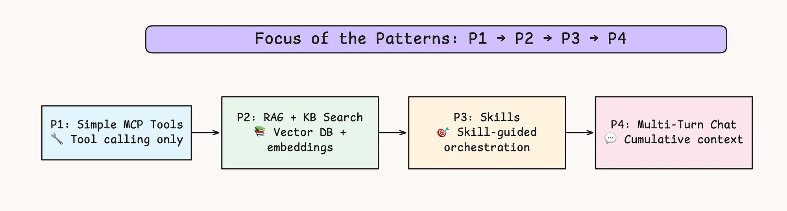
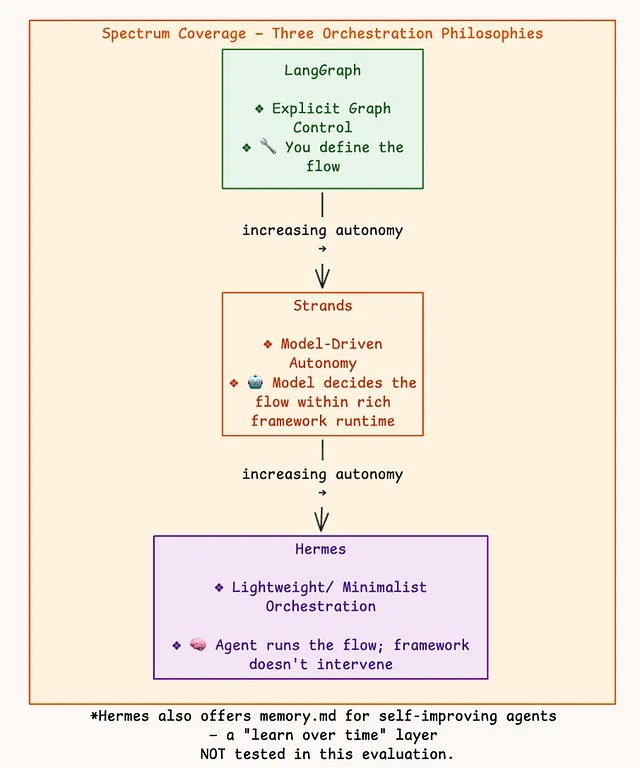
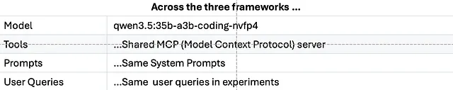
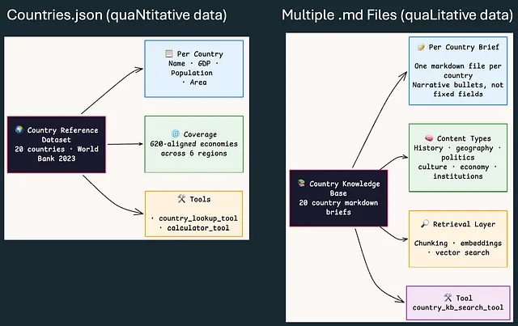

Key Sections of this Blog
- I. The Entire Blog in 5 Min
- The Agentic AI Patterns in Focus
- Why LangGraph, Strands, and Hermes; Why Not Others?
- Evaluation Analysis of the Patterns
- V. Conclusion
- Epilogue
- GitHub Resource & Useful References
I. The Entire Blog in 5 Min
This post compares three agent frameworks across four progressively harder patterns. The goal is not to crown a single universal winner, but to show which design choice helps most when the workload changes.
WHAT are we Analyzing? — 4 Architecture Patterns

HOW are we analyzing? — With 3 Frameworks

WHY are we analyzing? — To Unearth Key Architectural Findings

5-Minute Executive Summary - Detailed

II. The Agentic AI Patterns in Focus
Additive Architecture Lens
The four patterns below move from basic tool use to retrieval, skills, and multi-turn memory, so you can see how each framework behaves as the orchestration problem becomes more demanding.
| Pattern | Key Capability | Description |
|---|---|---|
| P1 | MCP tools | AI Agent with 2 Numeric Tools |
| P2 | +RAG tool | Same AI Agent with 2 Numeric Tools + 1 Semantic Retrieval Tool |
| P3 | +Skills | Same AI Agent with same tools + Skills |
| P4 | +Memory +chat | Same AI Agent with memory & terminal chat |
Progressive Design : * Layer one new behavior at a time and measure impact


III. Why LangGraph, Strands, and Hermes; Why Not Others?

IV. What Does the Evaluation Say?
Evaluation Analysis of the Patterns
4 Patterns · 3 Frameworks · 40+ Experiments
These tables summarize the 40+ experiments in this post. The benchmark keeps the model, tools, and prompts fixed so the framework design is the main variable.
Core Question: Which framework should you use — and when?
Alt Question: If you’re building a custom framework, what’s the best feature to borrow from each?

2 Data Sources, 3 Tools, 1 MCP Server

A Recap of the Patterns
| Common Factor | Description |
|---|---|
| Model | qwen3.5:35b-a3b-coding-nvfp4 (local Ollama — identical across all 3) |
| Tools | Same MCP (Model Context Protocol) server across 3 frameworks |
| Prompts | Uniform across 3 frameworks - LangGraph, Strands, Hermes |
Patterns (Progressive Complexity)
| Pattern | What It Tests | Key Challenge |
|---|---|---|
| P1 Simple MCP Tools | Basic tool calling + answer synthesis | Can the agent call tools and synthesize a coherent answer? |
| P2 RAG + KB Search | Vector DB retrieval + knowledge grounding | Can the agent combine structured + unstructured knowledge? |
| P3 Skills | Skill-guided multi-tool orchestration | Can the agent choose the right skill and follow its workflow? |
| P4 Multi-Turn Chat | Cumulative conversation context | How does cost scale with conversation depth? |
The Winner is …
There is no universal winner in this benchmark. The right framework is pattern-dependent:
| If you need… | Use… | Why |
|---|---|---|
| Simple tool orchestration | Hermes | Fastest, lightest |
| RAG-powered search | Strands | Lowest memory (44 MB), fastest RAG latency |
| Complex multi-skill workflows | LangGraph | 100% accuracy, best multi-skill orchestration |
| Multi-turn chatbot | Hermes | Flat O(1) LLM scaling — cost doesn’t grow with depth |
However, Hermes seems to be really promising (cannot help it :); so you borrow the maximum from here!)
Pattern 1: Simple MCP Tools
The Test: Can the agent reliably use external tools and return a clean, human-friendly answer?
Instead of raw metrics, here’s how these frameworks felt during build and execution:
| Feature | LangGraph | Strands | Hermes | Winner |
|---|---|---|---|---|
| Speed | 12.4s | 11.5s | 9.5s | Hermes ⚡ |
| Token Cost | 3,140 | 3,559 | 3,092 | Hermes 💸 |
| Server Overhead | 58.6 MB | 41.1 MB | 51.1 MB | Strands 🧠 |
| Code Weight | 76.9 MB | 72.8 MB | 49.3 MB | Hermes 🪶 |
| Dependencies | 175 | 142 | 101 | Hermes 📦 |
| Accuracy | 100% | 50% | 75% | LangGraph 🎯 |
🏆 Verdict: Hermes wins on efficiency, LangGraph wins on reliability
If you want a fast, lightweight, low-cost agent, Hermes clearly leads—smaller codebase, fewer tokens, fastest responses.
But there’s a catch: Hermes and Strands often don’t finish cleanly.
- Lazy Agent Problem:
Strands failed 50% of the time, Hermes 25%—dumping raw tool output instead of coherent answers. - LangGraph = predictable behavior:
Only framework with 100% accuracy, thanks to its enforced graph structure.
🛠️ Fix: Prompt Discipline Required
To get Hermes/Strands closer to LangGraph-quality outputs, you must force answer synthesis via prompt constraints:
_SYNTHESIS_SUFFIX = (
"\n\nIMPORTANT: After using tools, you MUST always provide a final "
"natural-language answer that synthesizes the results. "
"Never end your response with just a tool call."
)👉 Read the Full Pattern 1 Evolution Report
NOTE: * After uniformly fixing all 3 Frameworks with a
suffixprompt, all 3 frameworks had reliable 100% accuracy
Pattern 2: RAG + Knowledge Base Search
The Test: Can the agent retrieve the right knowledge from a vector DB and combine it into a clean, accurate answer?
Here’s how each framework handled the RAG workload:
| Feature | LangGraph | Strands | Hermes | Winner |
|---|---|---|---|---|
| Speed | 31.7s | 29.4s | 32.8s | Strands ⚡ |
| Token Cost | 2,627 | 3,688 | 2,898 | LangGraph 💸 |
| Server Overhead | 133.6 MB | 44.0 MB | 54.2 MB | Strands 🧠 |
| Code Weight | 984.8 MB | 996.8 MB | 967.2 MB | Hermes 🪶 |
| Accuracy | 100% | 100% | 100% | Tie 🎯 |
🏆 Verdict: Strands wins the systems battle, but all nail accuracy
If your agent is RAG-heavy (search + retrieval workflows), Strands stands out—fastest responses with significantly lower memory usage.
At the same time, all three frameworks achieved 100% accuracy, making this a purely systems-level comparison, not a correctness problem.
🔍 What actually mattered
The “RAG Tax” (Code Size):
All frameworks jumped to ~1GB due to embeddings + vector DB libraries.Memory Efficiency (Big Differentiator):
Strands and Hermes isolate heavy components into background processes → low RAM usage
LangGraph loads everything in-process → high memory footprintToken Trade-off:
Strands saves memory but spends more tokens
LangGraph is more concise (lowest token cost)
👉 Read the Full Pattern 2 Evolution Report
Pattern 3: Agent with Skills
The Test: Can the agent pick the right skill path and execute a multi-step plan without breaking logic?
Here’s how each framework handled guided orchestration:
| Feature | LangGraph | Strands | Hermes | Winner |
|---|---|---|---|---|
| Speed | 40.1s | 34.7s | 37.9s | Strands ⚡ |
| Token Cost | 9,499 | 14,154 | 8,031 | Hermes 💸 |
| Server Overhead | 134.6 MB | 45.6 MB | 54.4 MB | Strands 🧠 |
| Skill Selection | 5/5 | 5/5 | 4/5 | LangGraph / Strands 🛠️ |
| Accuracy | 100% | 100% | 75% | LangGraph / Strands 🎯 |
🏆 Verdict: LangGraph wins on precision, Strands on efficiency
If your workflow is high-risk, multi-step orchestration, LangGraph is the safest choice—it enforces structure and avoids logical mistakes.
Strands is faster and far more memory-efficient, but comes with a heavy token cost.
Hermes is lightweight and cheap—but this is where it starts to break.
🔍 What actually mattered
Precision vs Shortcutting:
Hermes chose the wrong skill path once → leading to a major factual error
(missed a country → wrong GDP output)Self-healing vs Token Explosion:
Strands showed strong resilience (auto-corrected failures likeUK → United Kingdom)
but paid for it with very high token usageBuilt-in Guardrails (LangGraph):
Enforces deterministic execution → no wrong paths, no missed steps, 100% accuracy
👉 Read the Full Pattern 3 Evolution Report
Pattern 4: Multi-Turn Conversational Agent
The Test: Can the agent handle long conversations without becoming slow, expensive, or context-blind?
Here’s how the frameworks scaled across turns:
| Feature | LangGraph | Strands | Hermes | Winner |
|---|---|---|---|---|
| LLM Calls (Turn 1 → 4) | 4 → 14 (3.5×) | 6 → 33 (5.5×) | 4 → 8 (2×) | Hermes 📉 |
| Token Growth | 4.6× | 8.4× | 2.6× | Hermes 💸 |
| Chat Speed | 62.8s | 24.5s | 34.8s | Strands ⚡ |
| Context Retention | ✅ Perfect | ⚠️ Partial | ❌ Failed | LangGraph 🧠 |
| Error Recovery | Perfect | Perfect | Perfect | Tie 🛠️ |
🏆 Verdict: Hermes saves cost, LangGraph preserves intelligence
If cost scaling is your concern, Hermes is the clear winner—lowest growth in LLM calls and tokens.
But this comes with a trade-off: context awareness drops sharply.
🔍 What actually mattered
Cheap but Forgetful (Hermes):
Struggles with context. Missed simple follow-ups
(“Same for Brazil” → wrong comparison)Fast but Expensive (Strands):
Fastest responses, but token usage explodes with history replayAccurate but Heavy (LangGraph):
Retains full context and reasoning
but scales via more LLM calls (brute force)
🛠️ Practical Fix (No Framework Change Needed)
You can fix both issues with a small architectural addition:
Hermes: Add intent clarification step
→ resolves vague follow-ups before executionLangGraph: Add history compression step
→ summarize past chats to control LLM call growth
👉 Read the Full Pattern 4 Evolution Report
Appendix
If you want to understand the LLM Call Spike numbers from turn 1 to 4 better, refer this github analysis here: Analysis of LLM Call Spike in Pattern 4
A Summary of the Winners (debatable!)

V. Key Learnings
1. No bad frameworks — only untested ones
| Framework | Best | Worst |
|---|---|---|
| LangGraph | 100% accuracy (P1+P3) | 134 MB memory, slowest |
| Strands | 44 MB memory, fast warm turns | 33 LLM calls by Turn 4, 124K tokens |
| Hermes | O(1) scaling, 2.6× token growth | ❌ Failed context test, missed Russia |
2. Architecture reveals weaknesses before your users do
| Framework | Architecture | Weakness It Creates |
|---|---|---|
| LangGraph | Graph state machine — re-evaluates every node | LLM calls grow linearly; high in-process memory |
| Strands | Full context replay — every call sees everything | Tokens explode as turns increase |
| Hermes | Fixed loop — plan once, execute, answer | Shallow history reasoning; fails implicit references |
None of these showed up in Pattern 1. All surfaced by Pattern 4.
The architecture didn’t change — the workload revealed it.
3. Evaluation is a product feature, not an afterthought
Standard metrics tell you how fast. Designed tests tell you how wrong.
| Measured | Discovered | How |
|---|---|---|
| Latency, tokens, memory | Hermes is fastest, cheapest | Standard metrics |
| “Same for Brazil” | Hermes drops context | Designed test |
| “Most populous European country” | Same model, different framework → different answer | Designed test |
| European GDP total | Hermes picked wrong skill → missed a country | Designed test |
Every ❌ was caught by a designed test, not a dashboard.
If we’d only measured speed and cost, Hermes would look flawless.
1. No bad frameworks — only untested ones
| Framework | Best | Worst |
|---|---|---|
| LangGraph | 100% accuracy (P1+P3) | 134 MB memory, slowest |
| Strands | 44 MB memory, fast warm turns | 33 LLM calls by Turn 4, 124K tokens |
| Hermes | O(1) scaling, 2.6× token growth | ❌ Failed context test, missed Russia |
2. Architecture reveals weaknesses before your users do
| Framework | Architecture | Weakness It Creates |
|---|---|---|
| LangGraph | Graph state machine — re-evaluates every node | LLM calls grow linearly; high in-process memory |
| Strands | Full context replay — every call sees everything | Tokens explode as turns increase |
| Hermes | Fixed loop — plan once, execute, answer | Shallow history reasoning; fails implicit references |
None of these showed up in Pattern 1. All surfaced by Pattern 4.
The architecture didn’t change — the workload revealed it.
3. Evaluation is a product feature, not an afterthought
Standard metrics tell you how fast. Designed tests tell you how wrong.
| Measured | Discovered | How |
|---|---|---|
| Latency, tokens, memory | Hermes is fastest, cheapest | Standard metrics |
| “Same for Brazil” | Hermes drops context | Designed test |
| “Most populous European country” | Same model, different framework → different answer | Designed test |
| European GDP total | Hermes picked wrong skill → missed a country | Designed test |
Every ❌ was caught by a designed test, not a dashboard.
If we’d only measured speed and cost, Hermes would look flawless.
VI. Epilogue
Bonus Pattern 5: (-)RAG -> (+)Wiki
Remove RAG; include Karpathy’s LLM Wiki pattern.


For the next iteration:
- Try Workflow Patterns
- Routing-Workflow
- Parallel-Workflow
- Sequential-Workflow

- Try comparing with other agentic AI frameworks
- There are still other good ones like:
temporal(python/typescript),pydantic ai(python),rig(rust)
- There are still other good ones like:
Reproducibility note: These results reflect one local Ollama-based benchmark run with the same model, the same MCP tools, and the same prompts across all three frameworks. If you rerun them with a different model or different tool behavior, the rankings may change.
VII. Github Resource
- The codebase, evaluation reports conducted are logged in github here: senthilkumarm1901/agentic_frameworks_exploration
Useful Reading References
Follow below links for reading material on Agentic AI, each expanding on the link above that.
- Simple article first: Building Effective AI Agents
- Inspired by the above article and based on my day-to-day experience, I wrote an article on similar lines long ago: https://medium.com/@senthilkumar.m1901/single-llm-to-agentic-ai-genais-evolution-explained-c0670d83…
- None of the above have skills explained well: Equipping agents for the real world with Agent Skills
- Same Stuff as 1 but elaborated further with Skills and More Agentic Patterns; Anthropic gave version 2: https://resources.anthropic.com/hubfs/Building%20Effective%20AI%20Agents-%20Architecture%20Patterns…
- Hermes Agent Masterclass (the pics here are 👌)
- The Context Engineering 101 (in pic):